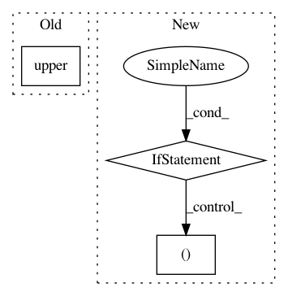

f25d9afd2572b98c56c3f597ad8da2648cd7b663,stanza/utils/training/common.py,,main,#Any#Any#Any#,21
Before Change
paths = default_paths.get_default_paths()
args = sys.argv[1:]
if args[0].startswith("--"):
mode = Mode[args[0][2:].upper()]
args = args[1:]
else:
mode = Mode.TRAIN
After Change
paths = default_paths.get_default_paths()
parser = build_argparse()
if "--extra_args" in sys.argv:
idx = sys.argv.index("--extra_args")
extra_args = sys.argv[idx+1:]
command_args = parser.parse_args(sys.argv[:idx])
else:
command_args, extra_args = parser.parse_known_args()
mode = command_args.mode
treebanks = []
for treebank in command_args.treebanks:
In pattern: SUPERPATTERN
Frequency: 3
Non-data size: 3
Instances
Project Name: stanfordnlp/stanza
Commit Name: f25d9afd2572b98c56c3f597ad8da2648cd7b663
Time: 2020-12-01
Author: horatio@gmail.com
File Name: stanza/utils/training/common.py
Class Name:
Method Name: main
Project Name: AlexsLemonade/refinebio
Commit Name: 1deebc89e81a2b88e27896454b5afefbd8e16886
Time: 2018-05-30
Author: rich@anomos.info
File Name: foreman/data_refinery_foreman/surveyor/sra.py
Class Name: SraSurveyor
Method Name: _generate_experiment_and_samples
Project Name: automl/SMAC3
Commit Name: 2d1e57efbb84d97ba8d85602096a7855c1a461ad
Time: 2019-07-18
Author: ashraaghav@gmail.com
File Name: smac/intensification/successive_halving.py
Class Name: SuccessiveHalving
Method Name: __init__